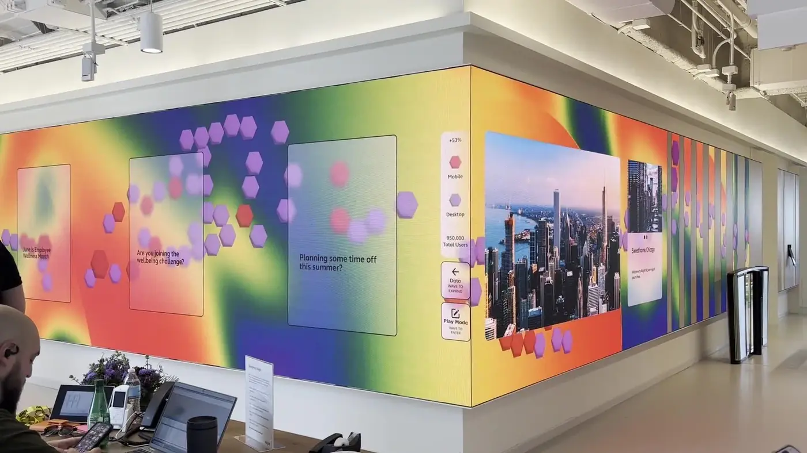
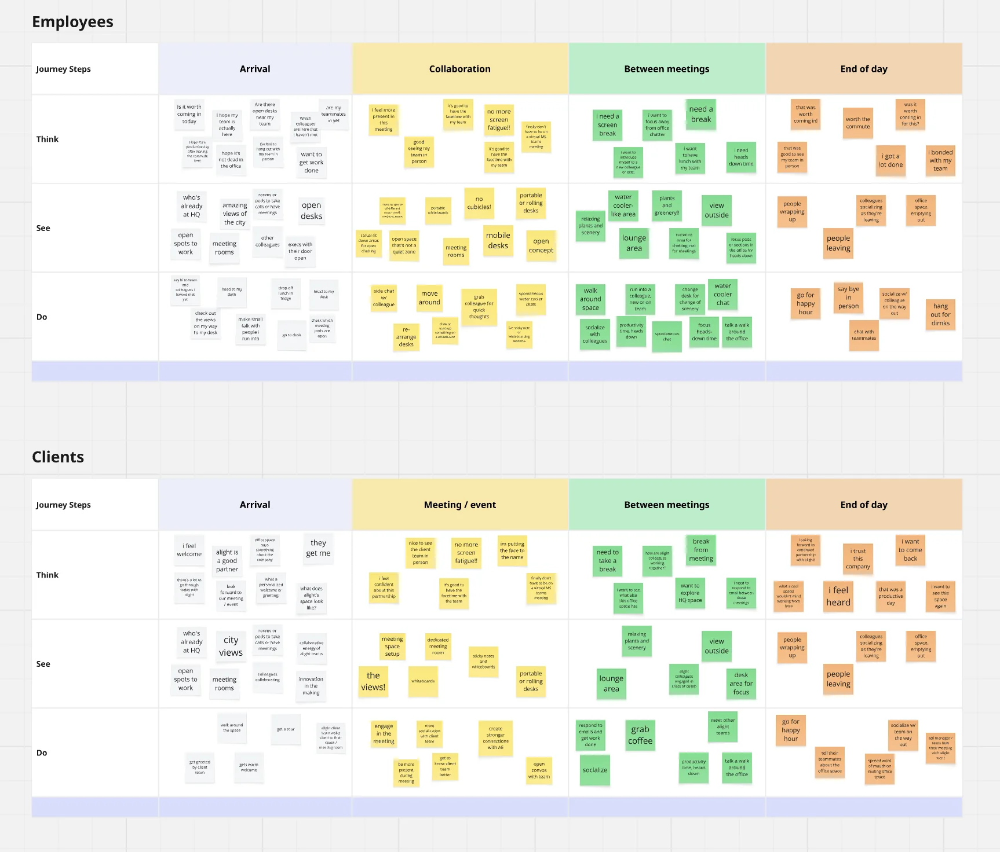
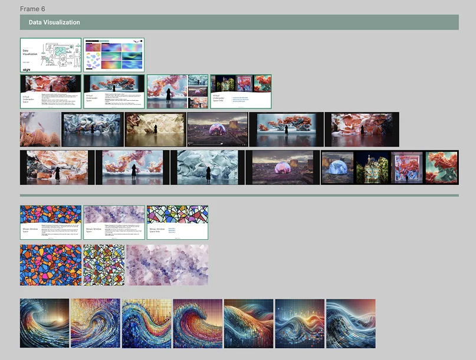
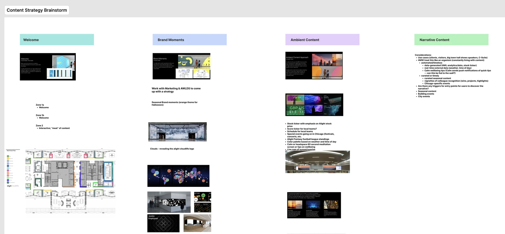
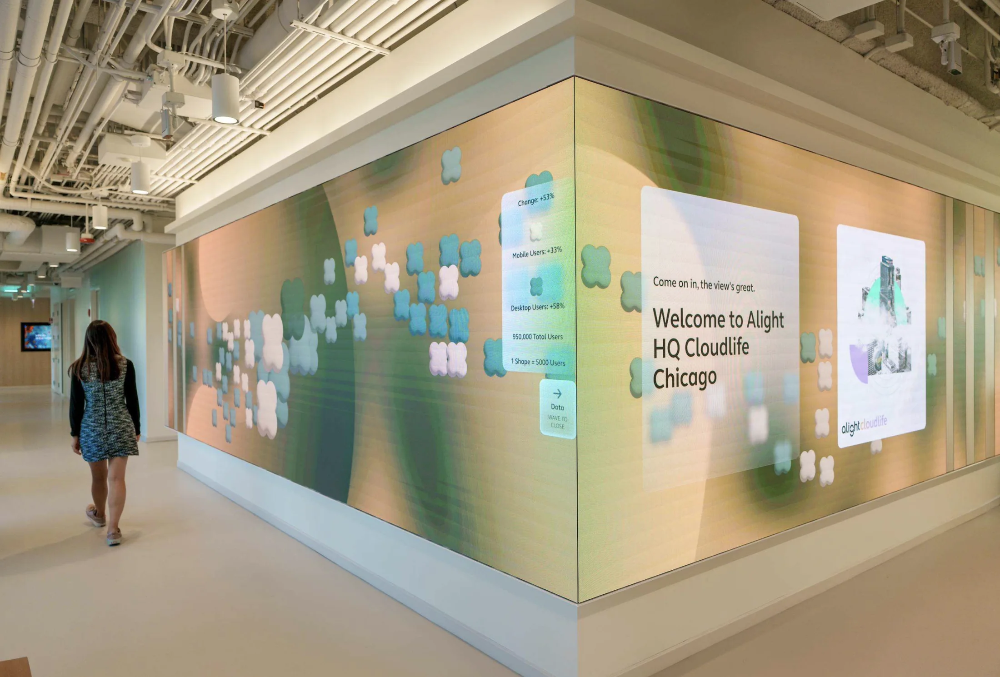
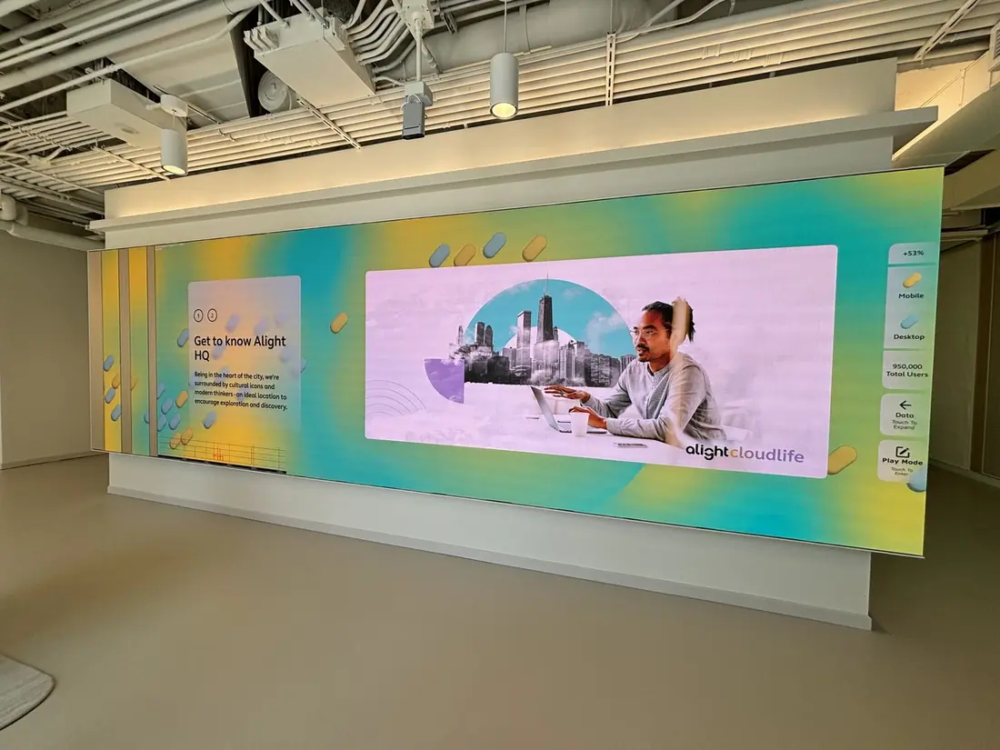
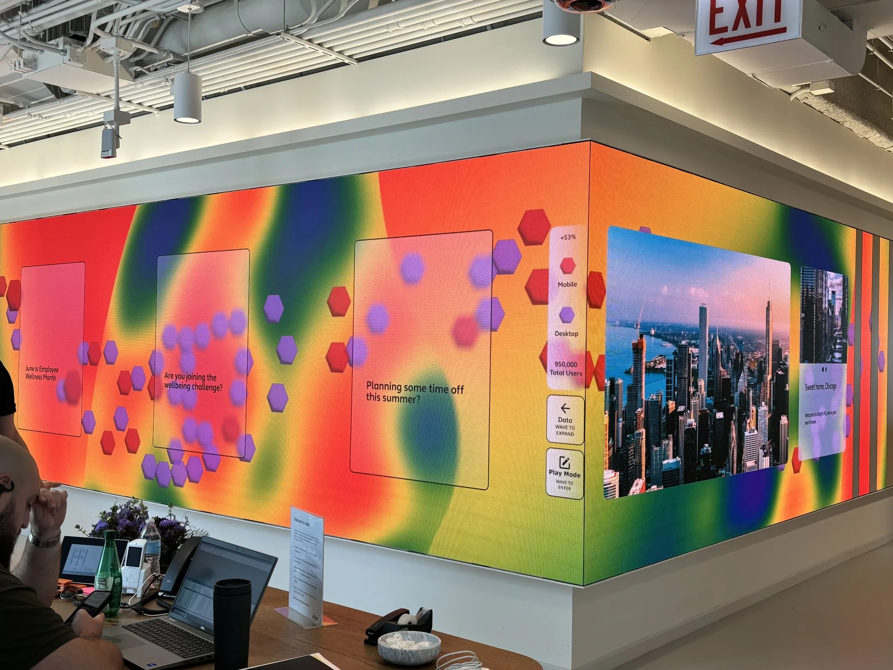
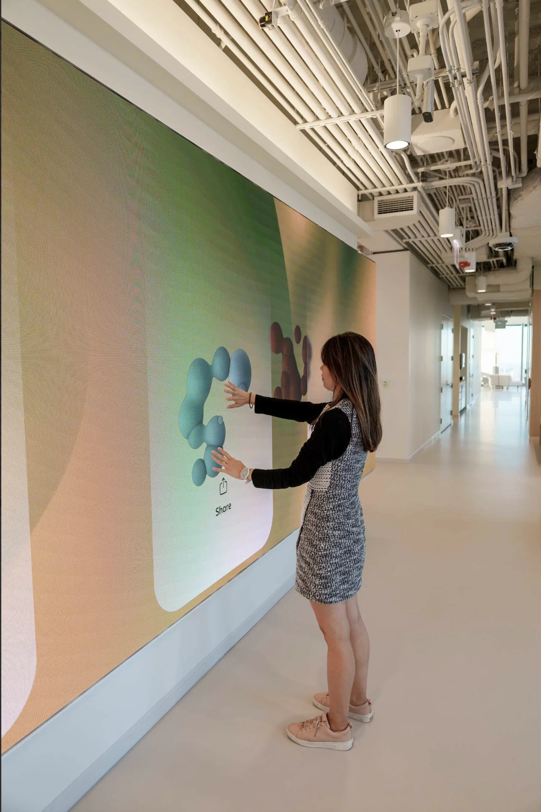

HQ Digital Installation
From
Blank wall
To
Living story
When Alight opened its new headquarters, the space needed to provide a sense of belonging and cultural connection for employees, and instill confidence and trust for clients. My role was to define the experience strategy, where digital and physical design worked together to evoke a third space.
- Role
- Experience strategist
- Team
- Design Directors & VP, Design Co-Lead, Third-party digital agency
- Timeline
- 4 months (1 month internal strategy; 3 months agency collaboration)

Problem
The challenge was to create a genuine third space that encouraged authentic interaction, collaboration, and creativity for employees, while signaling Alight’s innovative spirit to clients. As the first touchpoint for both audiences, the lobby needed to make a strong first impression without feeling like a gimmick.
Solution
I developed the experience strategy around Alight’s existing design principles (Win Moments, Spark Ease, Flex Modern, and Instill Confidence) governing every decision across the HQ. The resulting digital wall had three modes:
Ambient Data (Default)
Visualizes data to tell a story on employee engagement
Content
Configurable to display personalized, event-specific, or evergreen content
Play
An outlet for creative expression to connect people to the space

Process
Workshop
To align on what the overall HQ experience should accomplish, I led a workshop with our design VP and directors to map out how employees and clients would move through the space. The lobby surfaced as a key point for a strong first impression, and the most direct channel for telling Alight’s story through data and content.

Data Visualization Concepts
I explored data visualization ideas that made data feel alive and ambient without the need to decode it.

Content Strategy
To ensure that the installation had a clear POV, I brainstormed possible content ideas. This ultimately guided the third-party agency on the digital wall’s layout and CMS.

The Installation
Data Visualization
By default, the wall tells a story about employee engagement. Shapes are proportional to Alight’s employee platform visit volume, comparing month over month at a glance. For subtle motion reactivity, the data shapes follow your movement through the lobby.

Content
Configurable content displays client-personalized, event-specific, or evergreen content, updated through a CMS. A monthly color palette updates automatically to reflect the season, holidays, or cultural moments.


Play Mode
Hover your hand to form shapes and release them into the wall.

Impact
The digital installation, alongside the rest of the HQ space, brought to life a third space where employees wanted to be and clients wanted to return.
Personalized client experience for meetings, events, and after-hours
More organic facetime across teams and leadership, with remote employees voluntarily coming in
Positive reception of the HQ space, with the digital installation a consistent highlight
Challenges & Learnings
- Budget constraints: Working with a physical installation meant the possibility space was much larger than what was buildable. Several interaction and motion ideas had to be scaled back to fit within budget and timeline.
- Designing for a constrained physical space: The lobby corridor was narrower than ideal, which factored into decisions around motion sensing, interaction range, and flow.
- Physical space as a UX problem: Designing for a physical space adds a layer that screen-based UX doesn't have, accounting for how people move through a physical environment, and how a single touchpoint needs to feel cohesive with the overall space around it.